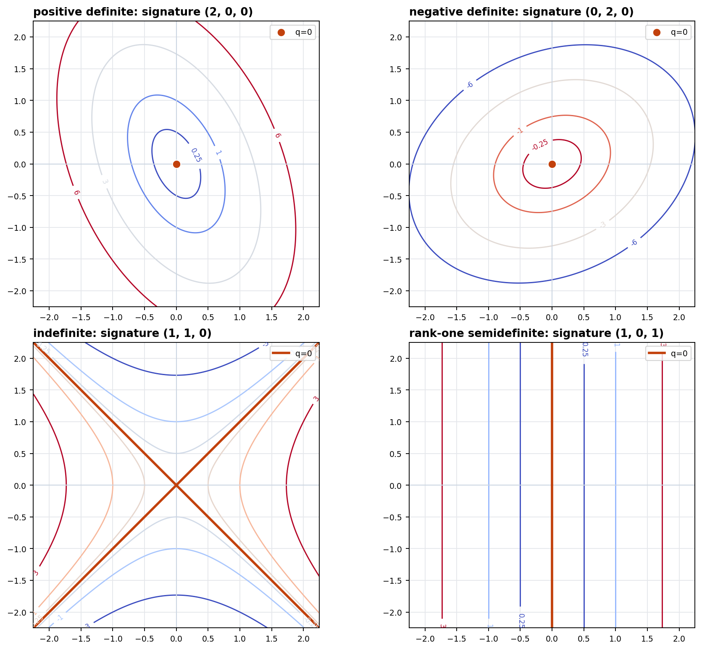
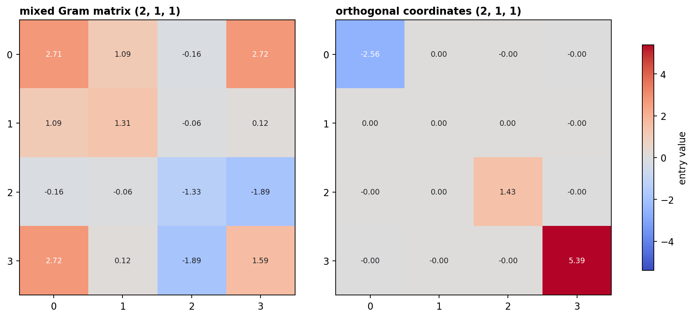
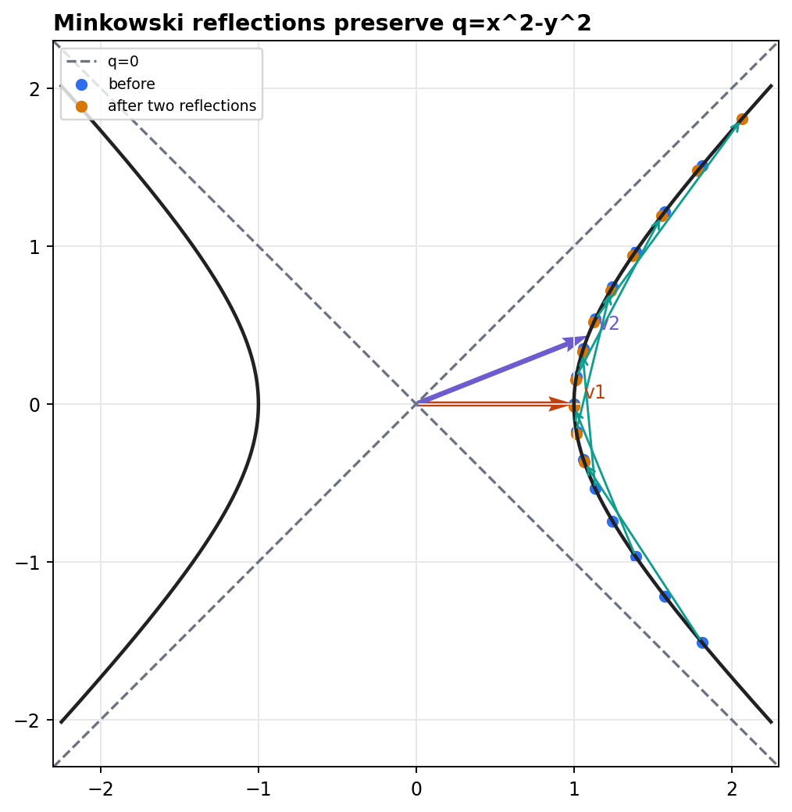

Quadratic Forms
A quadratic expression becomes a geometry once its positive, negative, zero, and isotropic directions are visible.
From Formula To Polar Form
A real quadratic form is represented in coordinates by a symmetric matrix \(A\):
The matrix entries depend on the basis, but the geometric counts we extract from \(A\) do not.
The hidden bilinear form is recovered from \(q\) alone:
The Matrix Moves By Congruence
If \(x=P y\), the same form in \(y\)-coordinates has matrix
- Congruence preserves the quadratic geometry.
- The numerical entries of \(A\) are coordinate evidence, not invariants.
- Diagonal form is a coordinate achievement, not a new form.
The reduction target is the signature triple:
positive independent directions
negative independent directions
radical dimension
Signature Is A Visible Invariant
- Definite forms have the origin as the only zero direction.
- Indefinite forms have two isotropic lines in the plane.
- Degenerate forms stretch level sets along forgotten directions.
Seeing \(q(x)=0\) away from the origin does not automatically mean degeneracy. It may also mean cancellation between positive and negative directions.

Notebook artifact: same coordinate window, four signatures, zero set highlighted.
Isotropic Directions Are Not All Alike
\(\operatorname{rad}(q)=\{v:B(v,w)=0\text{ for every }w\}\). These directions are invisible to every pairing, not merely zero for their own value.
The Lorentz Cone Packages Isotropy
- \(q=0\): nonzero isotropic directions form a double cone.
- \(q=1\): positive region, one connected hyperboloid.
- \(q=-1\): negative region, two separated sheets.
The saved Plotly artifact can be rotated after lecture: lorentz-cone-levels.html.
Sylvester's Law Of Inertia
After a real congruence reduction, a quadratic form becomes diagonal with \(p\) positive, \(n\) negative, and \(z\) zero entries. The triple \((p,n,z)\) is independent of the reducing basis.
Diagonal entries can be rescaled, and a dense Gram matrix can become sparse. The counts cannot change.

The right panel separates negative, zero, and positive directions for the same form.
Orthogonalization Splits What The Form Can See
- Choose a vector with nonzero value if one exists.
- Split off its \(B\)-orthogonal complement.
- Repeat until only isotropic or radical behavior remains.
- Pair isotropic directions when positive and negative signs coexist.
- Record the remaining positive, negative, and zero dimensions.
If \(A r=0\), then \(B(r,w)=r^T A w=0\) for every \(w\). The form cannot detect motion along \(r\).
Orthogonal diagonalization by a symmetric matrix theorem is efficient, but the geometric classification is about congruence and the subspaces it exposes.
Witt Decomposition Pairs Isotropic Directions
The coordinate axes are isotropic but not radical: each axis pairs nontrivially with the other.
Each paired positive-negative direction becomes one hyperbolic plane; unpaired signs form an anisotropic remainder.
Reflections Are Built From The Polar Form
- \(s_v(v)=-v\).
- The hyperplane \(B(x,v)=0\) is fixed.
- The identity \(s_v^T A s_v=A\) proves preservation.
In the Minkowski plane, two reflections move points along a branch of \(q=1\), the indefinite analogue of a rotation generated by mirror moves.

Classify A New Form By A Short Checklist
- Symmetrize \(A\); the skew part contributes nothing to \(x^T A x\).
- Compute \((p,n,z)\), rank, and radical basis.
- If \(p,n>0\), inspect isotropic geometry; if \(z>0\), split the radical.
- For transformations, verify \(T^T A T=A\).
Full table: signature-examples.csv.
Numerics do not replace proof; they make the invariant objects visible enough to test the proof.
What Survives Every Coordinate Change?
The triple \((p,n,z)\) is the stable classification datum for real quadratic forms under congruence.
Isotropy can signal cancellation; radical directions signal invisibility to the entire polar form.
Reflections and their products preserve the form because they preserve the polar pairing.
The generated check record verifies polarization, signature invariance, hyperbolic-plane diagonalization, radical detection, reflection preservation, and artifact existence. See final-sanity.json.